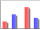
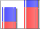
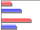
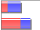
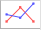

Views
Introduction
Accounting Software screenshot views
Most tables in the application support multiple ‘Views’ or ‘filters’ being defined for them by the user.
A ‘View’ can be thought of as a particular configuration of a table.
With a ‘View’ you can controls the following aspects of a table:
- Which columns are visible
- The order in which those visible columns are displayed
- The individual widths of the visible columns
- Whether the table may have horizontal scroll bars (so the combined width of all the columns can be greater than the available width on screen)
- Which column the table’s data is sorted by and in which direction it is sorted (ascending or descending)
- How the table’s data should be filtered (selectively exclude transactions matching a particular condition)
- How chart that is generated from the table’s data should look (for instance bar or pie chart)
Views are an extremely powerful feature that enable you to create very detailed reports and graphs of your data.
All tables that support views will have the following items visible on the far left of their tool bars:
Accounting Software Views drop down box button
The first item is a drop down box that allows you to apply any view that has already been defined for the given table.
By default the application defines a few pre-defined views for you. Most of these pre-defined views are fully editable by the user but some pre-defined views do restrict what you can edit about them (for instance some views can not be renamed, deleted, or have their filters altered).
The second item is the ‘Open/Close the View editor panel’ toggle button  . This button show/hides the View Editor Panel
. This button show/hides the View Editor Panel
The third item is the ‘New View’ button . This allows you to create a new view for the given table.
Create New View
Accounting Software create new view dialogue
Selecting this item displays a dialogue box (see above) prompting you to name your new view. All settings of the new view (apart from the name) will be copied from the view that was selected when the user pressed the ‘Create New View’ button (so the existing view is effectively ‘cloned’). Click ‘Add’ at this point to refine your new view in the View Editor Panel.
View Editor Panel
This (by default) hidden panel appears in-between the column headers and tool bar of the table when made visible (by clicking on the ‘Open/Close the View editor panel’ toggle button).
Accounting Software view editor panel
The ‘View Editor’ panel allows you to edit all aspects of the currently selected view or create new a view based on the currently selected view.
The ‘View Editor’ panel is made up of three different tabs:
- View Tab - allows you to edit all aspects of a view apart from the view’s filter and chart
- Filter Tab - allows you to construct new and modify existing filter conditions to control what rows are displayed in the table
- Chart Tab - allows you to modify all aspects of the chart that is constructed from the data being displayed in the table.
View Tab
Accounting Software views view tab
Delete Current View
The ‘Delete Current View’ button allows you to delete the currently selected view. This button is disabled for certain system default views as they can not be deleted.
View Name
This text field allows you to edit the name of the currently selected view. This text field is disabled for certain system default views as they can not be renamed.
Constrain Col Widths
The ‘Constrain Col Widths’ check box controls whether horizontal scroll bars are allowed in the table.
By default all tables will fit every visible column on screen so horizontal scroll bars are not needed. However if a table has lots of visible columns the table can get very crowded with each column being forced to be quite narrow (sometimes too narrow to be readable).
By unchecking the ‘Constrain Col Widths’ check box the table does not need to force all columns to fit on screen at the same time, the columns are allowed to overflow horizontally to the right. This allows the column widths to be set generously for greater readability.
If the ‘Constrain Col Widths’ check box is un-checked the Column Widths: Auto Adjust button becomes available to use.
Column Widths Auto Adjust
The ‘Column Widths: Auto Adjust’ button is only available if the Constrain Col Widths check box is un-checked.
When clicked the ‘Column Widths: Auto Adjust’ button will automatically resize the widths of all visible columns to be equal to the maximum width of their content.
Sort On Column
The ‘Sort On Column’ drop down box allows you to pick which (if any) table column the table contents should be sorted by.
Tip: You can also control which column to sort on (and in what direction) by clicking on the column’s heading in the table
Sort Direction
The ‘Sort Direction’ drop down box allows you to pick which (if any) direction the chosen Sort On Column should be sorted (ascending, descending, or none).
Tip: You can also control what direction a column is sorting (and what column is being sorted on) by clicking on the column’s heading in the table
Columns Displayed: Show/Hide Cols
The ‘Columns Displayed: Show/Hide Cols’ button when clicked brings up the ‘Set Column Visibility’ pop-up.
Accounting Software table set column visibility
The ‘Set Column Visibility’ pop-up allows you to control which columns that are available to the current table are visible on screen and which are hidden.
You can select one or more columns in either of the ‘Visible’ or ‘Hidden’ column list and then click on the ‘Show’ or ‘Hide’ buttons to move them into the opposite list.
You should see the selected columns appearing/disappearing in the table behind the pop-up as you move them from one list to the other.
Filter Tab
Accounting Software view filter tab
The ‘Filter’ tab allows you to filter (and consolidate) the data displayed in the table for the selected view.
Filters work by specifying conditions that apply to individual columns. A row must satisfy all these column conditions for it to be included in the data that is displayed in the table.
As you modify the filter you will see the table’s data changing in real time to show you the effects of your changes.
Buttons and Controls
Down the left hand side of the ‘Filter’ tab are a set of buttons and controls that comprise of the following items:
Add Condition
To add a new column condition to the filter you click the ‘Add Condition’ button. When you click the button a list of all the available columns will be displayed, pick from the list the column you want to add a condition for.
Accounting Software view filter add condition
Delete Condition
To remove a column condition select the condition in the Conditions Table and then click the ‘Delete Condition’ button.
Include Deleted
By default previously deleted rows are not included in the data displayed by the table.
By checking the ‘Include Deleted’ check box the deleted rows will be included in the table’s data.
Include Automated
Only available in transaction tables
By default ‘Automated Transactions’ are not included in the data displayed by the table.
By checking the ‘Include Automated’ check box the automated transactions will be included in the table’s data.
If no existing column condition specifies a date as its value then by default only one year’s worth of automated transactions will be included in the table. If an existing column condition does specifies a date (and that date is in the future) then all automated transactions that will occur up to the specified date will be included in the table.
N.B. If you wish to forecast for more than 1 year into the future, you will also need to amend the ‘Years of generated Look Ahead Transactions’ value in the Configure Automated Transactions module (located in the Automated Transactions component).
Amount Brought Forward
This feature, available in the Analysis tab of the Accounts, Balances and Budgeting component only, works in conjunction with the ‘Date’ filter condition. Entering a ‘Date’ condition line which defines a start date for the filter (i.e. Column=‘Date’, Condition=‘Greater than’, Value= a defined date), and then ticking this box and causes the table to consolidate all entries prior to this date and represent them as a single transaction line, effectively as a ‘balance brought forward’ for the data. N.B. Until the ‘Date’ condition is entered as described, the ‘Amount Brought Forward’ tickbox will be greyed out.
The point of this feature is to correctly represent the running balance of an account such as your credit card or current account, without having to display ALL transactions entered. Please see here for a worked example.
Group On Column
Only available in transaction tables
You can consolidate transactions together by grouping them on the common values of a particular column.
To group by a particular column select the column from the ‘Group On Column’ drop down box.

Accounting Software view filter group on column
Grouping on a ‘Date’ column
If you pick a column that stores dates as the one to group your transactions on you will see an additional drop down box entitled ‘By Each’ appear beside the Group On Column drop down:
Accounting Software view filter group on column date
The ‘By Each’ drop down box allows you to specify how you want the transactions to be grouped together, by either:
- Day
- Week
- Month
- Quarter
- Half Year
- Year
Conditions Table
The conditions table is to the right of the Buttons and Controls and takes up the majority of the filter tab’s space.

Accounting Software view filter tab table
The ‘conditions table’ lists all the existing column conditions that have been defined and their ‘AND/OR’ relationship between each other.
The ‘conditions table’ automatically groups conditions that operate on the same column together in the table(regardless of the order that they were added).
The table provides a way for you to edit each of the pre-defined column condition’s operator, value and relationship.
Columns
AND OR Relationship
All conditions that operate on the same column are treated as alternate conditions (OR). So for example if you have say two conditions ‘X’ and ‘Y’ that both use the same column then for a row to be included in the table it only needs to match either condition ‘X’ OR condition ‘Y’.
By default conditions that operate on different columns are cumulative conditions(AND). So for example if you have say two conditions ‘X’ and ‘Y’ (that use different columns) for a row to be included in the table it must match both condition ‘X’ AND condition ‘Y’ for it to be included in the table.
It is possible for you to change this default behaviour for conditions that operate on different columns by altering the first columns value from ‘AND’ to ‘OR’ but be aware this will affect the relationship of all conditions that operate on different columns.
Column
This specifies the column each condition is operating on. This field is not editable. To alter this value you will need to delete the condition and re-add it selecting the desired column.
Condition
This specifies the logical operator to apply when testing the row values against the condition’s value.
Clicking on this field will cause a drop down box to appear allowing you to select one of the valid operators for the condition (not all operators are valid for all columns, invalid operators will be greyed out).
Accounting Software view filter condition editor
The operator options are:
- Equals
- Not Equals
- Greater Than
- Less Than
- Greater Than or Equals
- Less Than or Equals
- Begins With - a string starts with the condition value
- Ends With - a string ends with the condition value
- Contains - a string contains the condition value somewhere inside it
- Occurs between - a date or amount occurs between the two condition dates/amounts
- Does not occurs between - a date or amount falls outside of the two condition dates/amounts
- Occurs in the last - a date occurs in the last X days, weeks, months or years
- Occurs in the next - a date occurs in the next X days, weeks, months or years
Tip: If you want to specify a date or amount range as a condition you must use the Occurs between or Does not occurs between operators. Creating two conditions using Greater Than and Less Than operators will not work as the two conditions will be joined together by OR rather than AND logic.
Value
This specifies the condition’s value (or values depending on the selected operator) that the row’s data will be tested against.
Chart Tab
Accounting Software view chart tab
The ‘Chart’ Tab lets you customise the chart for the currently selected view.
When you click on the ‘Chart’ Tab, the chart will automatically be displayed over the top of the main table area.
You can show/hide a table’s chart at any time simply by clicking the ‘Show/Hide Chart’ toggle button on the table’s tool bar. Notice that when the chart is being displayed all the other tool bar buttons become disabled. This is because you can not edit a table whilst viewing its chart.
Types of Chart
Here are the different types of charts available in the application:
Vertical Bar Charts
-  2D Bar Chart - the selected data series are plotted in separate bars.
-  Stacked 2D Bar Chart - the selected data series are ‘stacked’ on top of each other illustrating their combined values.
- 3D Bar Chart - as 2D Bar Chart, but the bars are depicted in 3D.
- Stacked 3D Bar Chart - as Stacked 2D Bar Chart, but the bars are depicted in 3D.
Horizontal Bar Charts
-  2D Bar Chart - the selected data series are plotted in separate bars.
-  Stacked 2D Bar Chart - the selected data series are ‘stacked’ beside each other illustrating their combined values.
- 3D Bar Chart - as 2D Bar Chart, but the bars are depicted in 3D.
- Stacked 3D Bar Chart - as Stacked 2D Bar Chart, but the bars are depicted in 3D.
Line Charts
 Lines Only - the selected data series are plotted using straight lines between values.
Lines Only - the selected data series are plotted using straight lines between values. Points Only - just the data values themselves are plotted, like a scatter diagram.
Points Only - just the data values themselves are plotted, like a scatter diagram.-  Lines & Points - a combination of the previous two chart types.
 Stepped Line Chart - the selected data series are plotted using ‘stepped’ lines.
Stepped Line Chart - the selected data series are plotted using ‘stepped’ lines.
Pie Charts
- 2D Pie Chart - a simple 2-dimensional pie chart.
- 3D Pie Chart - a pie chart depicted in 3D.
Area Charts
- Transparent Layers Area Chart - each data series is plotted as a shaded area. The shaded areas are semi-transparent so that the area from each data series is visible beneath the others.
- Stacked Area Chart - the shaded areas from each selected data series are stacked to show their combined values.
Bar Charts and Pie Charts tend to be used to plot categorical data. In this case, each row in the table represents a ‘category’, and one column from the table is chosen to provide labels used to identify the categories.
Line graphs and Area charts can also be used to plot categorical data, but are typically used to plot values on a scaled horizontal axis. In this case, one column in the table is chosen to provide the specific values along this horizontal axis.
Data Selection
The data to be used in the chart is set by choosing columns from the table.
The column used to identify the labels for categorical data (or the horizontal axis values for scaled data) is chosen from a drop-down menu labelled ‘Category Labels’ or ‘Horizontal Axis Values’ (depending on the type of chart that has been selected).
Further ‘data series’ are added to the chart by selecting the corresponding columns in the Data Series selector. Note that only columns containing numerical data will appear in the Data Series selector, because only numerical data can be represented on a chart. Note also, that at least one data series is needed to produce a chart. In the case of Pie Charts, only one data series is representable. If more than one data series is selected, the first will be used in the chart, and other selections will be ignored.
In all charts other than Pie Charts, each data series will be represented on the chart by a separate colour. Since there is only one data series for a pie chart, different colours are used here to distinguish between the categories.
Combining Matching Values
If the column representing the category labels has the same value in more than one row, the data can be interpreted in two ways:
- Either each row is treated as a distinct category, despite the duplicated label(s);
- Or rows with matching category labels should be considered as the same category, and their respective values combined into one value.
To switch between these options, there is a Combine Matching Values checkbox. If this checkbox is ticked, then rows with matching category labels will be considered as one category and their values combined.
Plotting the horizontal axis to scale
As already described, Line Charts and Area Charts can be used both to plot discrete categorical data, and to plot continuous data on a scaled horizontal axis. If the column selected as the horizontal axis values is a Date or a numerical column, then there is the option to plot the horizontal axis to scale. Instead of plotting the values on the chart at regular intervals along the horizontal axis, the values can be placed according to their numerical or chronological value.
To toggle between these two modes, with a Line Chart or Area Chart selected, tick (and untick) the Plot this axis to scale checkbox.
Other options
- Chart Title
- Horizontal Axis Label
- Vertical Axis Label
- Show Legend
- Pie Chart Label Style